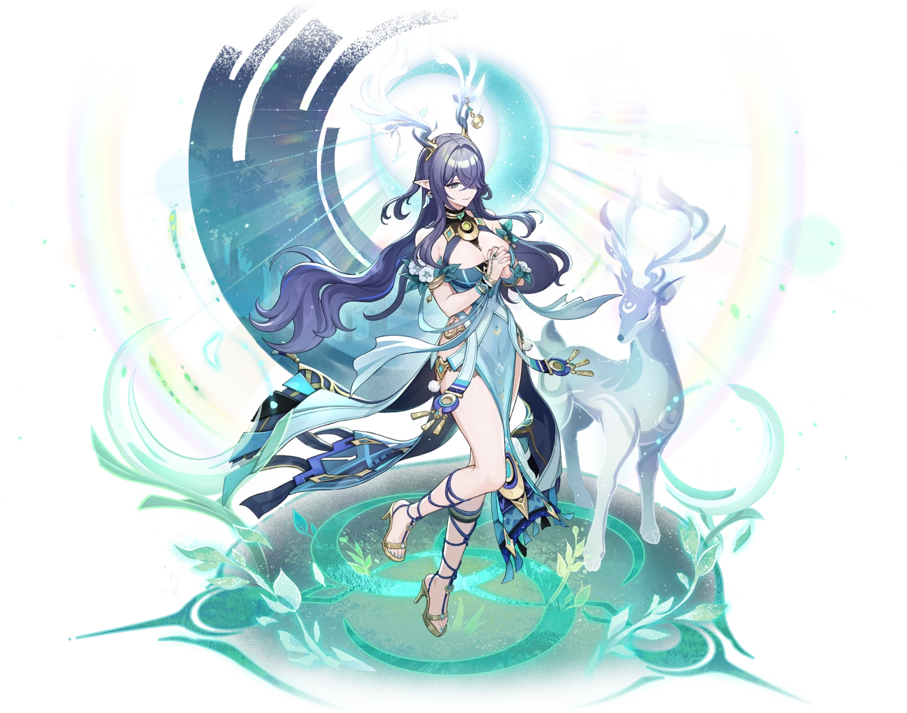

Святая, благословлённая лунным светом и лесом, надежда, рождённая среди Детей Морозной Луны.

Лаума — святая, благословлённая лунным светом и лесом, надежда, рождённая среди Детей Морозной Луны.
Её титул — «Жертвенная песнь вечной Луне», созвездие — Серебряный Олень.